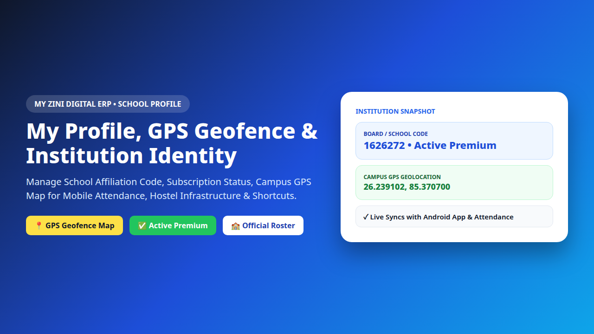
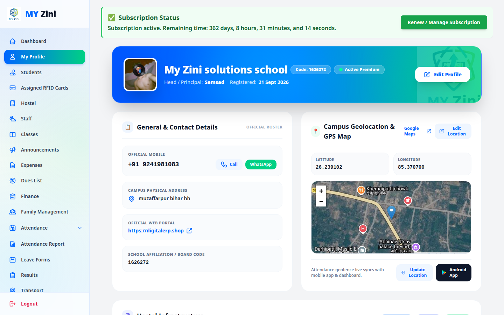
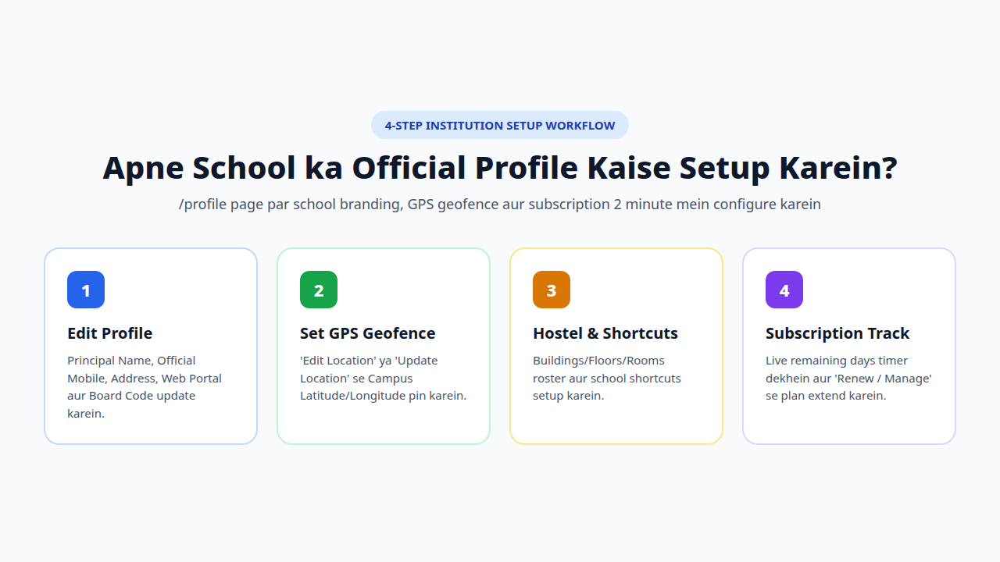
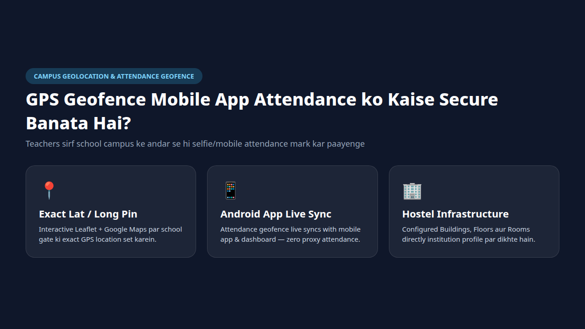
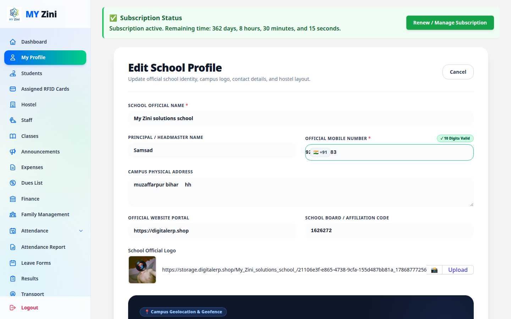
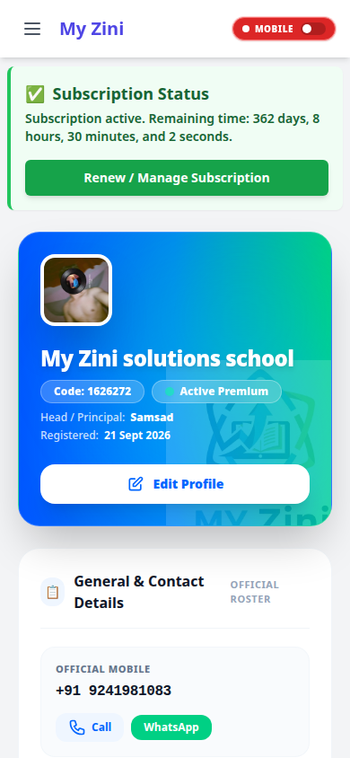
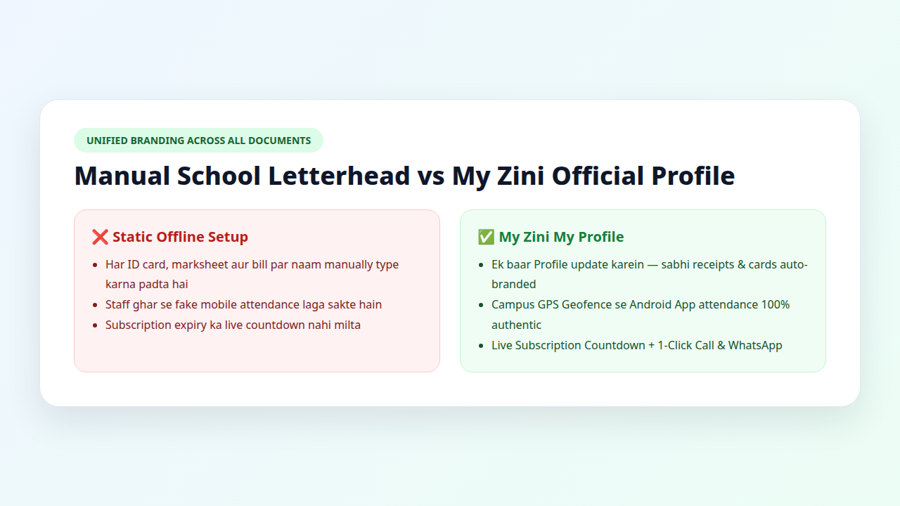

My Zini Digital ERP mein My Profile, GPS Geofence aur School Account Kaise Manage Karein? (Complete Hinglish Guide)
Aapke school ka naam, Principal ka naam, official phone number, board affiliation code, aur campus ki exact GPS location — yeh sabhi details poore ERP ki pehchan hoti hain. Chahe student ke ID card print karne hon, fee receipt par school ka header lagana ho, ya teacher ke Android app par attendance geofence lagana ho, sab kuch aapke My Profile (/profile) page se control hota hai. Is Hinglish guide mein humne live portal par Subscription Status countdown, General & Contact Details, Interactive Leaflet GPS Map, Hostel Infrastructure aur School Shortcuts ko test karke poora step-by-step walkthrough तैयार kiya hai.

⚡ TL;DR — Quick Summary (AI & Reader Snapshot)
- Route: Sidebar mein
My Profile(https://myzini.digitalerp.shop/profile). - Subscription Banner: Live countdown timer (
362 days, 8 hours...),Active Premiumbadge aurRenew / Manage Subscriptionbutton. - Institution Identity & Roster: School Name (My Zini solutions school), Code (
1626272), Head/Principal (Samsad), Registered Date, Official Mobile (Call&WhatsApp), Campus Address, Web Portal aur Board Code. - Campus Geolocation & GPS Map: Interactive Leaflet + Google Maps with
LATITUDE/LONGITUDE,Edit Location,Update Location, aurAndroid Appsync. - Hostel Infrastructure & Shortcuts: Buildings/Floors/Rooms roster (
1 Buildings, 2 Floors, 4 Rooms) +⚡ Set up school shortcuts,👤 Create School Account, aurEdit Details.
1. Subscription Status Banner aur General & Contact Details
Jaise hi aap sidebar se My Profile open karte hain, sabse upar green ✅ Subscription Status banner dikhta hai jo real-time mein batata hai ki aapka Active Premium plan kitne din, ghante, minute aur second ke liye valid hai — saath hi Renew / Manage Subscription button bhi milta hai.
Uske theek neeche aapke school ka official identity card hota hai jisme School Name, unique Code: 1626272, Head / Principal: Samsad, Registered: 21 Sept 2026 aur Edit Profile button dikhai deta hai. 📋 General & Contact Details (OFFICIAL ROSTER) section mein 4 zaroori fields milti hain: OFFICIAL MOBILE (direct Call aur WhatsApp buttons ke saath), CAMPUS PHYSICAL ADDRESS, OFFICIAL WEB PORTAL, aur SCHOOL AFFILIATION / BOARD CODE.


2. Campus Geolocation & GPS Map (Android App Attendance Geofence)
Yeh My Zini Digital ERP ka ek bahut hi smart security feature hai! 📍 Campus Geolocation & GPS Map section mein aap apne school campus ki exact LATITUDE (e.g. 26.239102) aur LONGITUDE (e.g. 85.370700) interactive Leaflet + Google Maps par set kar sakte hain.
Page par clear likha hota hai: "Attendance geofence live syncs with mobile app & dashboard." Iska matlab hai ki jab teachers ya staff apne Android App se attendance lagayenge, toh system unki GPS location ko campus coordinates se verify karega taaki koi bhi ghar baithe fake attendance na laga sake! Aap Edit Location, Update Location aur Google Maps links ka use karke kabhi bhi coordinates adjust kar sakte hain.

3. Hostel Infrastructure Summary, Edit Profile aur Quick Actions
GPS Map ke neeche aapko Hostel Infrastructure card dikhta hai — "Configured hostel buildings, student floors, and assigned room roster." Yahan aapke school ki buildings, floors aur rooms ka visual tree dikhta hai (jaise 1 Buildings • 2 Floors • 4 Rooms — Floor 2 par Room 4, Floor 1 par Room 1, Room2).
Page ke sabse neeche 3 handy action buttons milte hain: ⚡ Set up school shortcuts (rapid billing shortcuts configure karne ke liye), 👤 Create School Account, aur Edit Details (ya upar Edit Profile) jisse aap institution ki saari details update kar sakte hain.

4. Mobile Responsive View aur Unified School Branding ke Fayde
Chahe Principal apne phone (390px viewport) par subscription days check karein ya school gate par khade hokar GPS coordinates update karein, /profile page har device par cleanly fit hota hai.


Quick Reference Table: /profile Module Cheat Sheet
| Section | Key Fields / Buttons | Primary Purpose |
|---|---|---|
| Subscription Status | Live Countdown + Renew / Manage Subscription | Plan validity track karna aur renewal manage karna |
| Official Roster | Mobile (Call/WhatsApp), Address, Web Portal, Board Code | Sabhi printed documents aur portals par official branding |
| Campus GPS Map | Latitude, Longitude, Edit/Update Location, Android App | Mobile app attendance ke liye campus geofence set karna |
| Hostel Infrastructure | Buildings, Floors, Rooms count | Configured residential hostel capacity dekhna |
| Quick Actions | Set up school shortcuts, Create School Account, Edit Details | Shortcuts, account creation aur profile editing |
Frequently Asked Questions (FAQs)
1. Campus GPS Map par Latitude aur Longitude kaise set karein?
Jab aap school campus ke andar khade hon, toh Update Location ya Edit Location par click karke map par apna school gate pin kar sakte hain. Isse exact Latitude (e.g. 26.239102) aur Longitude (e.g. 85.370700) save ho jaate hain aur turant Android App ke attendance geofence ke saath sync ho jaate hain.
2. School Affiliation / Board Code kahan-kahan print hota hai?
Aapke My Profile par saved School Name, Affiliation/Board Code (1626272), Address aur Official Mobile automatically Generator Tools (/generator-tools) ke Admit Cards, Marksheets, Certificates, ID Cards aur 4-in-1 Fee Bills par print hote hain.
3. "Active Premium" subscription expire hone par kya hota hai?
Aapko top banner par har second ka live countdown (days, hours, minutes, seconds) dikhta rehta hai taaki kabhi surprise na mile. Expiry se pehle hi aap Renew / Manage Subscription dabakar plan renew kar sakte hain aur aapka saara cloud data 100% safe rehta hai.
4. Official Roster mein "Call" aur "WhatsApp" buttons ka kya use hai?
Agar koi staff member, coordinator ya parent school ke official contact number par test call ya WhatsApp message bhejna chahein, toh profile card se hi 1-click mein Call dialer ya WhatsApp chat open ho jaati hai.
5. "⚡ Set up school shortcuts" button kahan le jaata hai?
Yeh button aapko Payments & Shortcuts Hub (/shortcut) aur quick cashier setup par le jaata hai jahan se aap rapid billing, staff salary aur bulk monthly fees configure kar sakte hain.
6. Kya School Profile ka data Data Center (/data-center) ke backup mein aata hai?
Haan! Data Center VAULT (/data-center) ka sabse pehla dataset card 🏫 School Profile (table: owner) hi hai, jo aapke Full School Backup JSON mein hamesha include rehta hai.
7. "Android App" button par click karne se kya hota hai?
GPS Map ke neeche diya gaya Android App button school admins aur teachers ko My Zini Android companion app ke saath geofence sync aur mobile access connect karne mein madad karta hai.
8. Agar Principal badal jaayein toh "Head / Principal" name kaise change karein?
Bas top-right mein Edit Profile ya neeche Edit Details button par click karein, naye Principal ka naam update karein aur save kar dein — turant sabhi future certificates aur notices par naya naam reflect hone lagega.
9. Apne school ke liye My Zini Digital ERP kaise shuru karein?
Aap Digital ERP Registration Form par jaakar sirf ₹100 Registration Fee ke saath apna school register kar sakte hain aur kuch hi minutes mein apna Institution Profile aur GPS Geofence setup kar sakte hain.
10. "Google Maps" link par click karne se kya khulta hai?
Campus Geolocation card ke top par maujood Google Maps link aapko aapke saved Latitude/Longitude coordinates par seedha Google Maps open karke dikhata hai, taaki aap verify kar sakein ki pin bilkul sahi building par laga hai ya nahi.
11. Hostel Infrastructure section mein "1 Buildings, 2 Floors, 4 Rooms" kahan se aata hai?
Yeh summary aapke Hostel setup se sync hoti hai aur institution profile par dikhati hai ki school campus mein kitni residential buildings, floors aur rooms configured hain.
12. Kya My Profile aur System Settings (/settings) alag-alag hain?
Haan! My Profile (/profile) aapke school ki public identity, contact roster, subscription status aur campus GPS location ke liye hai, jabki Settings (/settings) app version, theme, notifications aur system preferences configure karne ke liye hai.
13. "👤 Create School Account" button ka use kab hota hai?
Agar aap apne trust ya group ka ek naya sister school ya branch account register karna chahte hain, toh profile ke neeche diye gaye 👤 Create School Account shortcut se turant naya institution setup shuru kar sakte hain.
14. Kya GPS Map ko zoom in/out karke check kiya ja sakta hai?
Bilkul! Embedded Leaflet map par + aur − zoom buttons milte hain jinse aap street-level par zoom karke apna school building aur main gate verify kar sakte hain.
15. Kya School Website URL (Official Web Portal) daalna zaroori hai?
Agar aapke school ki apni website ya digitalerp.shop landing page hai (jaise https://digitalerp.shop), toh use OFFICIAL WEB PORTAL mein save karne se parents ko official circulars aur receipts par clickable portal link milta hai.
16. "Attendance geofence live syncs with mobile app & dashboard" ka real-life fayda kya hai?
Aksar bade schools mein teachers ya drivers phone se attendance lagate waqt campus ke bahar se check-in kar dete hain. Jab aap Campus Geolocation & GPS Map par school ki exact Latitude aur Longitude set kar dete hain, toh Android App sirf campus radius ke andar hone par hi attendance accept karta hai, jisse 100% discipline bana rehta hai.
17. "School Code: 1626272" kya hota hai aur yeh kahan use hota hai?
Yeh aapke institution ka unique school identification / affiliation code hota hai. Jab parents ya teachers My Zini Android App par login karte hain ya jab aap official board documents (Marksheets, Admit Cards, Transfer Certificates) generate karte hain, toh yeh School Code aapke institute ko uniquely verify karta hai.
18. Agar hamare school ka official mobile number badal jaaye toh kaise update karein?
Aap Edit Profile ya neeche diye gaye Edit Details button par click karke apna naya Official Mobile Number update kar sakte hain. Save karte hi OFFICIAL ROSTER ke saath-saath sabhi future fee slips aur WhatsApp footers par naya number dikhne lagta hai.
19. Kya "Edit Location" aur "Update Location" mein koi antar hai?
Edit Location aapko manually Latitude aur Longitude coordinates enter ya map pin drag karne deta hai (jaise office mein baithkar campus pin karna), jabki Update Location aapke current device ke GPS sensor se turant live location fetch karke campus coordinates update karne ke liye useful hai.
20. Kya Campus Physical Address ID Cards aur Fee Bills par automatically aata hai?
Haan bilkul! Aap jo bhi address CAMPUS PHYSICAL ADDRESS (e.g. muzaffarpur bihar hh) mein save karte hain, wahi exact address Generator Tools (/generator-tools) ke ID Cards, 4-in-1 Fees Dues Bills, Admit Cards, aur Progress Cards ke header par automatically print hota hai.
21. "Registered: 21 Sept 2026" date kya darshati hai?
Yeh date batati hai ki aapka school My Zini Digital ERP cloud platform par kis tarikh ko register hua tha. Isse school management aur audit team ko digital transformation aur subscription history ki exact timeline mil jaati hai.
22. Kya "Active Premium" plan mein sabhi 21+ ERP modules unlocked rehte hain?
Haan! Active Premium subscription ke saath aapko Students, RFID Attendance, Finance, Dues List, Family Management, Staff Payroll, Exam Results, Generator Tools, Announcements, Expenses, Leave Forms, Transport aur Data Center sabhi modules bina kisi extra per-module fee ke milte hain.
23. Kya Hostel Infrastructure card par rooms ya floors add/edit kiye ja sakte hain?
Hostel Infrastructure card par dikhne wale Buildings, Floors aur Rooms (jaise Floor 2: Room 4, Floor 1: Room 1, Room2) aapke Hostel configuration se sync hote hain, jisse Principal ek hi nazar mein poori campus capacity dekh sakte hain.
24. Kya koi Teacher ya Student admin ke My Profile ko edit kar sakta hai?
Bilkul nahi! Security aur RLS (Row Level Security) ke tahat /profile par School Identity, GPS Geofence aur Subscription controls sirf authorized School Owner / Admin login ke liye hi accessible hote hain.
25. Kya My Profile par school logo ya branding details bhi reflect hoti hain?
Haan! Aapke school ka naam (My Zini solutions school), School Code, Principal Name aur Official Contact details poore dashboard aur sabhi printed documents par consistent school branding dikhane ke liye sync rehti hain.
26. Naye session ki shuruwat mein My Profile par kya-kya verify karna chahiye?
Har April mein naye academic session se pehle 4 cheezein zaroor check karein: (1) Subscription remaining days, (2) Official Mobile & WhatsApp number, (3) Campus Address & Board Affiliation Code, aur (4) GPS Geofence coordinates taaki poora saal smoothly chale.
27. Kya My Profile par mobile number change karne se login ID bhi badal jaati hai?
Official Roster ka mobile number public contact aur receipts ke liye hota hai, jabki aapka Admin Email login (teamdigitalerp@gmail.com) safe rehta hai taaki school ka access kabhi disturb na ho.
Real School Scenarios: My Profile ka Smart Use
1. Day-1 School Branding Setup
Naye school account par pehle din hi Edit Profile se Board Code, Principal Name, Official Mobile aur Address save karein taaki sabhi ID cards aur fee bills par sahi header aaye.
2. Campus Relocation ya New Wing GPS Update
Agar school naye campus mein shift ho, toh gate par khade hokar Update Location dabayein aur 10 second mein naya Attendance Geofence live kar dein.
3. Subscription Renewal Planning
School committee meeting mein Subscription Status banner dikha kar exact remaining validity days confirm kiye ja sakte hain.
4. Multi-Branch School Expansion
Ek hi management agar naya coaching ya primary wing khole, toh Create School Account button se naya tenant setup turant shuru ho jaata hai.
Pro Tip: Android App attendance shuru karne se pehle ek baar Google Maps link par click karke zaroor verify karein ki aapka saved Latitude aur Longitude pin bilkul school campus ke center par hai, taaki har teacher ko smooth attendance check-in mile. Saath hi har mahine Data Center (/data-center) se School Profile (owner) ka backup bhi zaroor download karein.